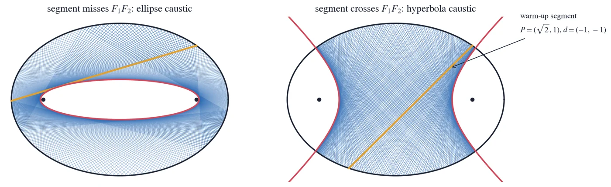
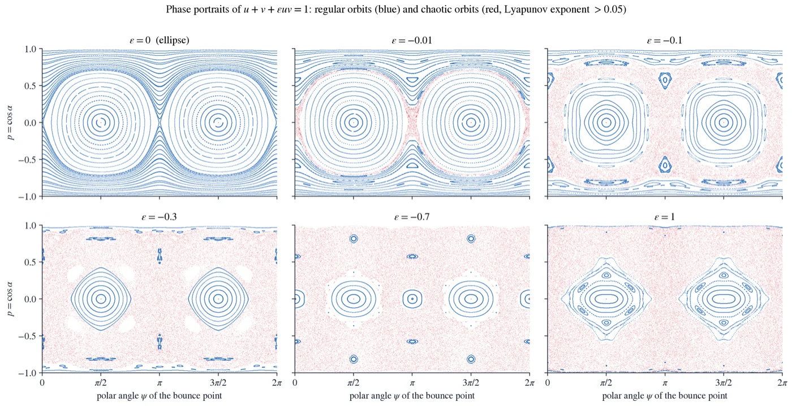
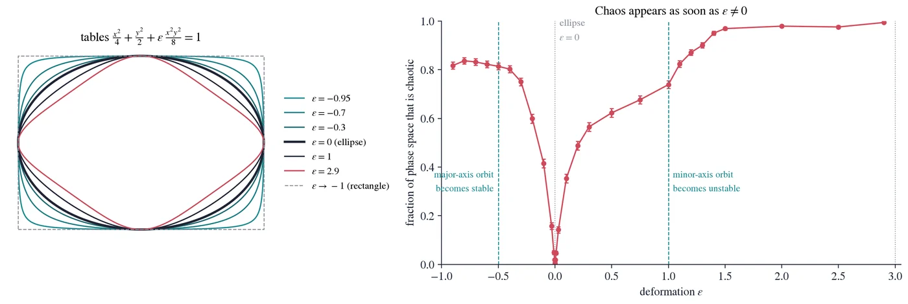
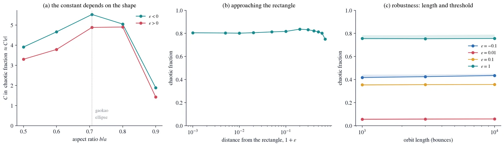

From a gaokao ellipse to the onset of chaos
How the caustics of elliptic billiards break
A ball bouncing inside an ellipse never wanders freely: every segment of its path is tangent to one fixed confocal conic, and the product d1d2 of the distances from the foci to the path never changes. Starting from the ellipse x²/4 + y²/2 = 1 in Problem 16 of the 2025 Chinese national college entrance exam, the project proves these classical facts with high-school tools and checks them to 10−13 with a simulator built on Vieta's formulas.
It then deforms the equation itself into a family of tables joining the ellipse to a rectangle, computes the stability of the axis orbits exactly, and finds numerically that chaos appears for every nonzero deformation, with the chaotic fraction and the error in d1d2 both growing linearly, for every aspect ratio tested. Approaching the rectangle does not restore order: about 80% of phase space stays chaotic. The question sits next to the Birkhoff conjecture, an open problem about which billiard tables are integrable.
- 11 pages
- 31 automated checks
- 32 tables × 9M bounces



